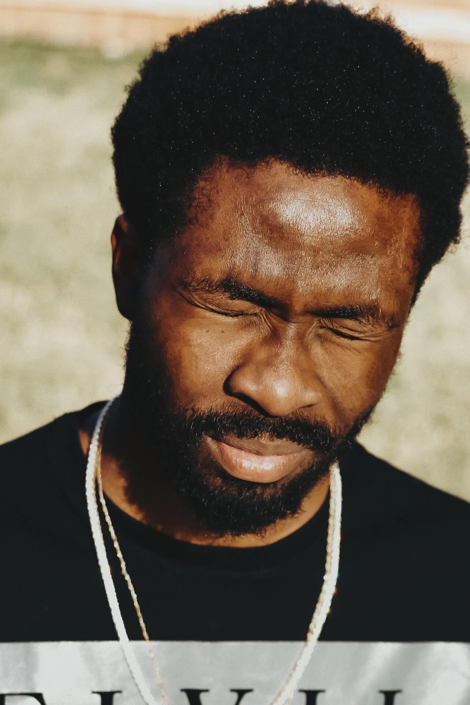
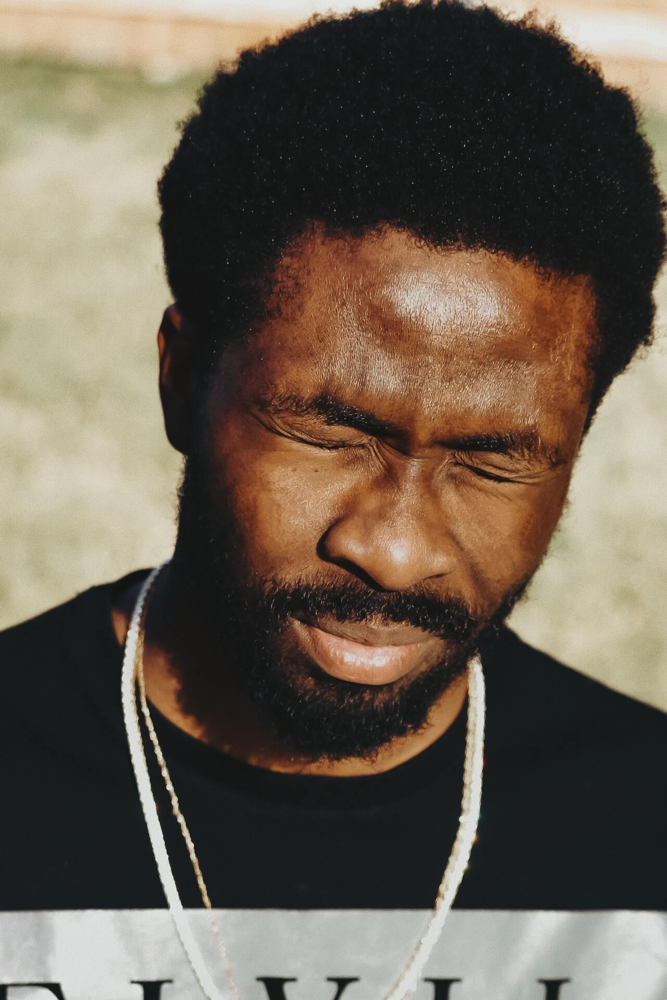

À propos de moi
Devenir photographe était pour moi une évidence...
Nous passons notre vie à chercher le bonheur...
Portfolio

 



Un portrait n’est pas une ressemblance...
Mes services
Shooting photo
Pour capturer vos moments les plus précieux...
350€/demi journée
Matériel, déplacement inclusRetouches
Vous souhaitez retoucher vos photos...
50€/photo
2 AR par photoAlbum photos
Partagez avec vos proches...
400€ album A4
30 pages recto/versoDe manière inconsciente, je crois...
Contact
Une question ? Une demande de devis ?
N’hésitez pas à m’écrire...